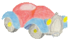

 Car Pool: Traffic Simulator
This tool is done to simulate a lot of car loking for people, or a people loking for a car.
Just click on the map!
Every click create a new mobile, at the position of the click.
Position clicked
-
name:
telephone:
xmppAdress:
price:
destination:
type:
unknown
People
Car